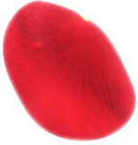

position:absolute(相对于父对象,将对象从文档中拖出，使用left,right,top,bottom等属性把元素放在任意地方，因为它可以层叠，改变层叠顺序用z-index：1/2/../122;)/fixed(相对于屏幕)/relative（relative是相对于自己来定位的).
例如：#demo{position:relative;top:-50px;},这时#demo会在相对于它原来的位置上移50px。）
relative和absolute的另外一个很重要的区别就是当被定义成absolute的对象被移出了，那么他原来的位置也就不存在了，
如果被定义成relative的对象被移出了 他原来的位置还在，别的元素就不能替代这个位置.